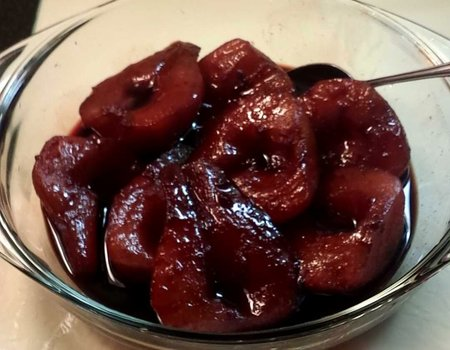
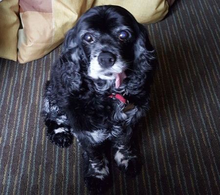

I am a senior at New York University where I study politics and computer science. I am determined to learn as much as I can about computer science, and I am eager to apply what I have learned through politics to better shape the technologies we use everyday. If you are interested in seeing my projects, please check out my github and other social media links on the home page, or contact me to talk further.
megha.madan@nyu.edu
(678) 641 - 0389
I played soccer for over 10 years and now I play for fun whenever I can!
 I also love cooking. This is a salted caramel apple pie. I make everything from scratch, including the crust!
 Lastly, I am mildly obsessed with my dog (as most people are). Her name is Freckles.